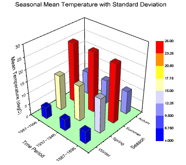
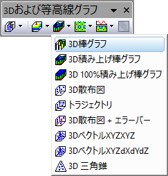

3D棒グラフ
3D-Bars
- 
必要なデータ
- 少なくとも1つのZ列（あるいは、その部分領域）を選択します。Z列に結びついたXY列がある場合、そのXY列が使われます。そうでない場合、ワークシートのデフォルトのXY値が使われます。
- または
- ワークシートセルのブロック（仮想行列）を選択します。
または、
グラフ作成
行列シートをアクティブにするか必要なデータをワークシート上で選択します。
ワークシーデータの場合、メニューからを選択し、行列データの場合、を選択します。
または、
「3Dおよび等高線グラフ」ツールバーの3D棒グラフボタン をクリックします。
- 
テンプレート
- gl3DBARS.OTP (OpenGL)
- 3DBARS.OTP
(Originのプログラムフォルダにインストールされています。)
ノート
- Z値が各棒の高さを決めています。列/棒は、Z値に対してカラーマッピングされます。
- 行列/ワークシートの各行番号に対応づけられたY座標および列番号に対応づけられたX座標により、各棒のXY位置が決まります。
- XYに対応するZ値が欠損している場合、棒の幅について欠損値を無視するチェックボックス（作図の詳細のページ属性にある表示指定タブ）をオフにすることで、欠損している棒をプロットする（つまり、空のスペースをプロットする）ことを選択できます。Origin 2021b以降のバージョンでサポートされています。以前のバージョン（Origin 2017 SR1-Origin 2021）の場合は、システム変数@OGLBWF = 3として設定してください。
- Origin 2018から、任意のプロット属性（境界線の色、塗りつぶしの色など）をカテゴリカルデータへのインデックスに設定している場合、カテゴリー凡例を追加して1つまたは複数の属性を並べて表示できます。
- Origin 2018bから、Ctrlキーを押しながら棒の上でダブルクリックして、3DXYZ棒グラフで特別なポイントを追加できるようになりました。特別なポイントを追加したら、パターンおよびラベルタブで編集が可能です。